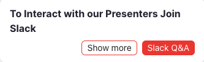
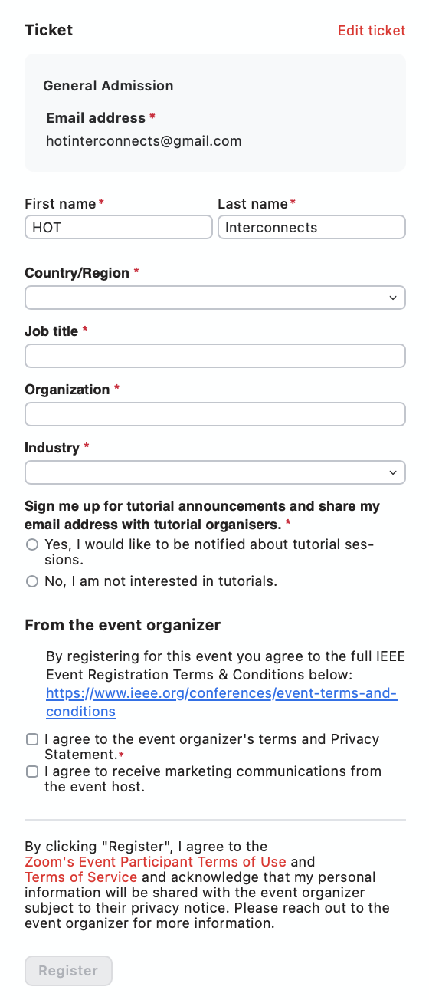
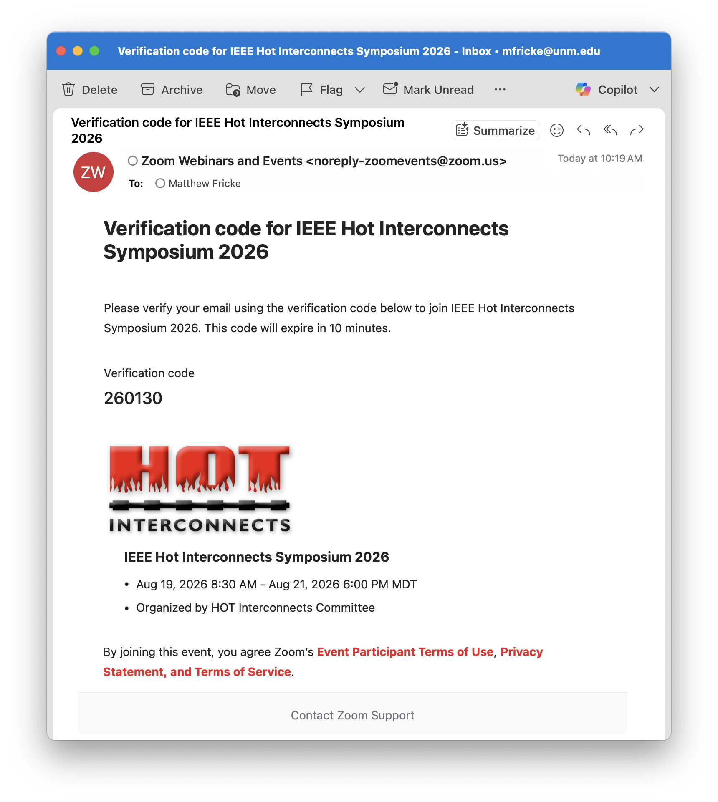
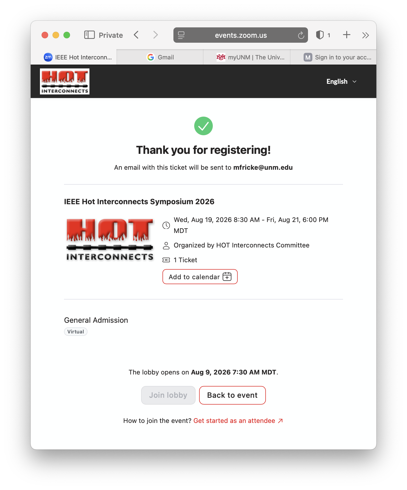
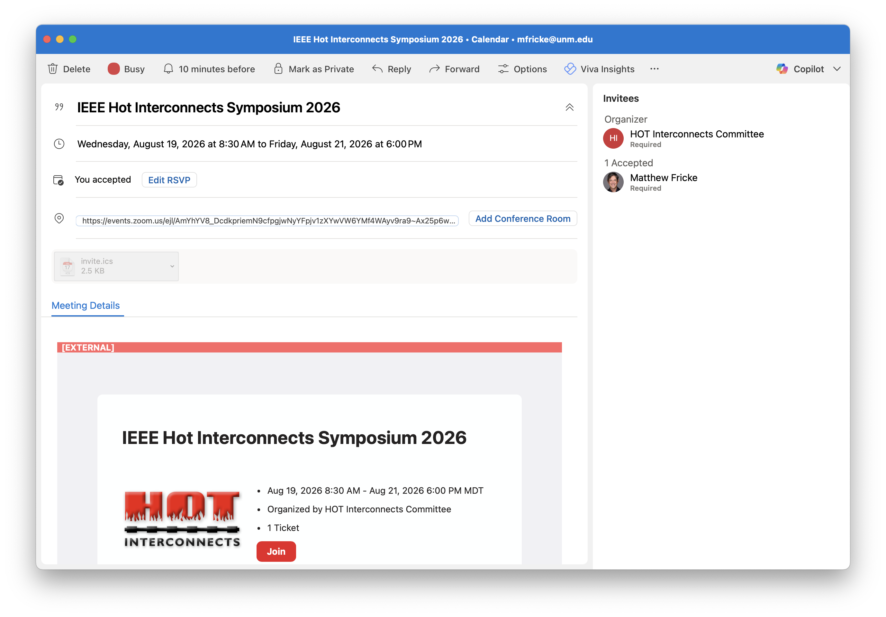
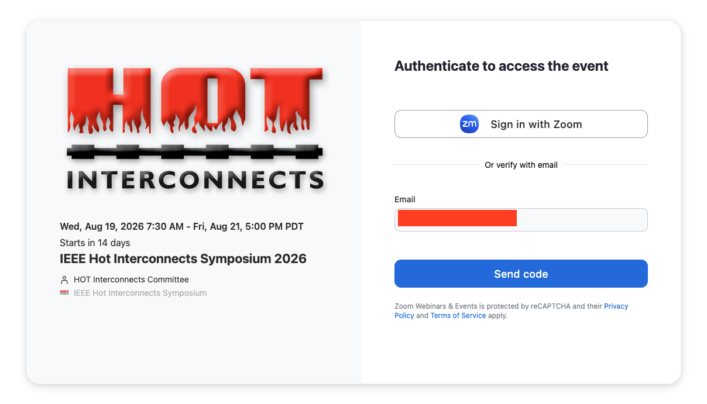
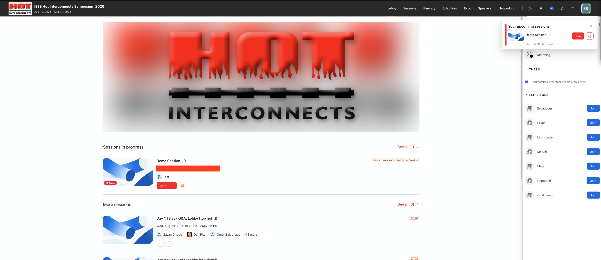

Find the invitation email with the subject "You are invited to be a speaker for IEEE Hot Interconnects Symposium 2026." (or check if the invite is already on your calendar) and see below
REGISTER/JOIN Zoom Events link: [HERE]
|
 |
NOTE: Q&A's are exclusively handled on Slack, use the link provided in the Zoom Lobby or click here!! |
This guide provides step-by-step instructions for registering and attending the IEEE HOT Interconnects Symposium 2026 via Zoom Events. The event uses the Zoom Events platform, which provides digital tickets tied to your email address. Follow the steps below to successfully register, join, and recover your ticket if needed.
To begin, visit the event registration page. You'll be prompted to enter your first and last name as well as your email address. Once filled in, click the Send code button. This triggers Zoom to send a verification code to the email address you provided, ensuring the address is valid and that you have access to it.

Open your inbox and find the email from Zoom Events. It will contain a 6-digit verification code. Copy this code and return to the registration form. Paste or type the code into the appropriate field to verify your identity and continue the registration process.

If you wish to participate in Tutorial sessions, simply check the corresponding boxes. Your selections may help the organisers tailor communication or plan capacity.
Before completing your registration, you must acknowledge and accept the terms and conditions presented. These include Zoom’s event policies and the event organiser’s code of conduct. Tick the required boxes to proceed.
After completing the registration, you will be shown a confirmation screen. This screen includes the event details and a button allowing you to add the event to your calendar. At this point, a confirmation email has also been sent to you containing your ticket and join information.

Your calendar item will include a direct link to the Zoom Event. This personalised join link will redirect you to the lobby or session once the event begins. Please do not share this link, as it is tied to your ticket and Zoom account.

Speakers do not need to register separately. All speakers are automatically assigned a general admission ticket, which grants access to all sessions for the conference days.
To join IEEE HotI 2026 as a speaker:

Important: Whichever option you choose, you must use the same email address at which you received the speaker invitation. Using a different email address may prevent you from accessing the event.
Once you are authenticated, you land in the event lobby. Sessions you are speaking at are marked You’re the Speaker, and you can join them from there. Q&A is handled in Slack — the link is provided in the lobby.
